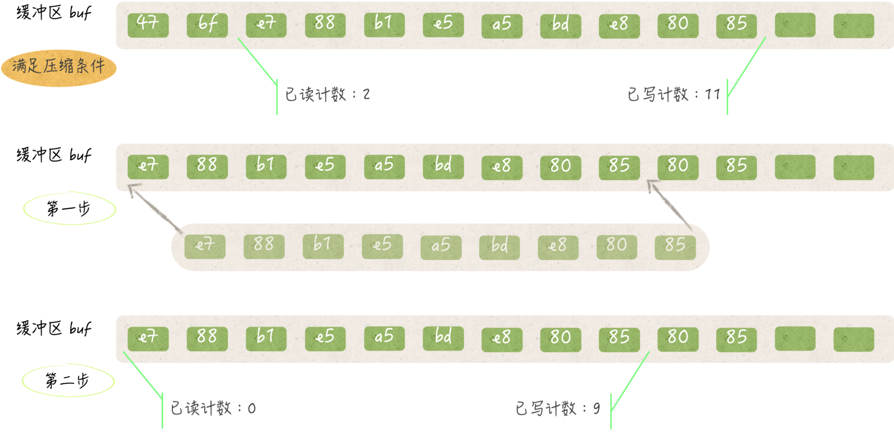

- 00 导读 写给0基础入门的Go语言学习者.md.html
- 00 导读 学习专栏的正确姿势.md.html
- 00 开篇词 跟着学，你也能成为Go语言高手.md.html
- 01 工作区和GOPATH.md.html
- 02 命令源码文件.md.html
- 03 库源码文件.md.html
- 04 程序实体的那些事儿（上）.md.html
- 05 程序实体的那些事儿（中）.md.html
- 06 程序实体的那些事儿 （下）.md.html
- 07 数组和切片.md.html
- 08 container包中的那些容器.md.html
- 09 字典的操作和约束.md.html
- 10 通道的基本操作.md.html
- 11 通道的高级玩法.md.html
- 12 使用函数的正确姿势.md.html
- 13 结构体及其方法的使用法门.md.html
- 14 接口类型的合理运用.md.html
- 15 关于指针的有限操作.md.html
- 16 go语句及其执行规则（上）.md.html
- 17 go语句及其执行规则（下）.md.html
- 18 if语句、for语句和switch语句.md.html
- 19 错误处理（上）.md.html
- 20 错误处理 （下）.md.html
- 21 panic函数、recover函数以及defer语句 （上）.md.html
- 22 panic函数、recover函数以及defer语句（下）.md.html
- 23 测试的基本规则和流程 （上）.md.html
- 24 测试的基本规则和流程（下）.md.html
- 25 更多的测试手法.md.html
- 26 sync.Mutex与sync.RWMutex.md.html
- 27 条件变量sync.Cond （上）.md.html
- 28 条件变量sync.Cond （下）.md.html
- 29 原子操作（上）.md.html
- 30 原子操作（下）.md.html
- 31 sync.WaitGroup和sync.Once.md.html
- 32 context.Context类型.md.html
- 33 临时对象池sync.Pool.md.html
- 34 并发安全字典sync.Map （上）.md.html
- 35 并发安全字典sync.Map (下).md.html
- 36 unicode与字符编码.md.html
- 37 strings包与字符串操作.md.html
- 38 bytes包与字节串操作（上）.md.html
- 39 bytes包与字节串操作（下）.md.html
- 40 io包中的接口和工具 （上）.md.html
- 41 io包中的接口和工具 （下）.md.html
- 42 bufio包中的数据类型 （上）.md.html
- 43 bufio包中的数据类型（下）.md.html
- 44 使用os包中的API （上）.md.html
- 45 使用os包中的API （下）.md.html
- 46 访问网络服务.md.html
- 47 基于HTTP协议的网络服务.md.html
- 48 程序性能分析基础（上）.md.html
- 49 程序性能分析基础（下）.md.html
- 尾声 愿你披荆斩棘，所向无敌.md.html
- 新年彩蛋 完整版思考题答案.md.html
- 捐赠
42 bufio包中的数据类型 （上）
今天，我们来讲另一个与I/O操作强相关的代码包bufio。bufio是“buffered I/O”的缩写。顾名思义，这个代码包中的程序实体实现的I/O操作都内置了缓冲区。
bufio包中的数据类型主要有：
Reader；Scanner；Writer和ReadWriter。
与io包中的数据类型类似，这些类型的值也都需要在初始化的时候，包装一个或多个简单I/O接口类型的值。（这里的简单I/O接口类型指的就是io包中的那些简单接口。）
下面，我们将通过一系列问题对bufio.Reader类型和bufio.Writer类型进行讨论（以前者为主）。今天我的问题是：bufio.Reader类型值中的缓冲区起着怎样的作用？
这道题的典型回答是这样的。
bufio.Reader类型的值（以下简称Reader值）内的缓冲区，其实就是一个数据存储中介，它介于底层读取器与读取方法及其调用方之间。所谓的底层读取器，就是在初始化此类值的时候传入的io.Reader类型的参数值。
Reader值的读取方法一般都会先从其所属值的缓冲区中读取数据。同时，在必要的时候，它们还会预先从底层读取器那里读出一部分数据，并暂存于缓冲区之中以备后用。
有这样一个缓冲区的好处是，可以在大多数的时候降低读取方法的执行时间。虽然，读取方法有时还要负责填充缓冲区，但从总体来看，读取方法的平均执行时间一般都会因此有大幅度的缩短。
问题解析
bufio.Reader类型并不是开箱即用的，因为它包含了一些需要显式初始化的字段。为了让你能在后面更好地理解它的读取方法的内部流程，我先在这里简要地解释一下这些字段，如下所示。
buf：[]byte类型的字段，即字节切片，代表缓冲区。虽然它是切片类型的，但是其长度却会在初始化的时候指定，并在之后保持不变。rd：io.Reader类型的字段，代表底层读取器。缓冲区中的数据就是从这里拷贝来的。r：int类型的字段，代表对缓冲区进行下一次读取时的开始索引。我们可以称它为已读计数。w：int类型的字段，代表对缓冲区进行下一次写入时的开始索引。我们可以称之为已写计数。err：error类型的字段。它的值用于表示在从底层读取器获得数据时发生的错误。这里的值在被读取或忽略之后，该字段会被置为nil。lastByte：int类型的字段，用于记录缓冲区中最后一个被读取的字节。读回退时会用到它的值。lastRuneSize：int类型的字段，用于记录缓冲区中最后一个被读取的Unicode字符所占用的字节数。读回退的时候会用到它的值。这个字段只会在其所属值的ReadRune方法中才会被赋予有意义的值。在其他情况下，它都会被置为-1。
bufio包为我们提供了两个用于初始化Reader值的函数，分别叫：
NewReader；NewReaderSize；
它们都会返回一个*bufio.Reader类型的值。
NewReader函数初始化的Reader值会拥有一个默认尺寸的缓冲区。这个默认尺寸是4096个字节，即：4 KB。而NewReaderSize函数则将缓冲区尺寸的决定权抛给了使用方。
由于这里的缓冲区在一个Reader值的生命周期内其尺寸不可变，所以在有些时候是需要做一些权衡的。NewReaderSize函数就提供了这样一个途径。
在bufio.Reader类型拥有的读取方法中，Peek方法和ReadSlice方法都会调用该类型一个名为fill的包级私有方法。fill方法的作用是填充内部缓冲区。我们在这里就先重点说说它。
fill方法会先检查其所属值的已读计数。如果这个计数不大于0，那么有两种可能。
一种可能是其缓冲区中的字节都是全新的，也就是说它们都没有被读取过，另一种可能是缓冲区刚被压缩过。
对缓冲区的压缩包括两个步骤。第一步，把缓冲区中在[已读计数, 已写计数)范围之内的所有元素值（或者说字节）都依次拷贝到缓冲区的头部。
比如，把缓冲区中与已读计数代表的索引对应字节拷贝到索引0的位置，并把紧挨在它后边的字节拷贝到索引1的位置，以此类推。
这一步之所以不会有任何副作用，是因为它基于两个事实。
第一事实，已读计数之前的字节都已经被读取过，并且肯定不会再被读取了，因此把它们覆盖掉是安全的。
第二个事实，在压缩缓冲区之后，已写计数之后的字节只可能是已被读取过的字节，或者是已被拷贝到缓冲区头部的未读字节，又或者是代表未曾被填入数据的零值0x00。所以，后续的新字节是可以被写到这些位置上的。
在压缩缓冲区的第二步中，fill方法会把已写计数的新值设定为原已写计数与原已读计数的差。这个差所代表的索引，就是压缩后第一次写入字节时的开始索引。
另外，该方法还会把已读计数的值置为0。显而易见，在压缩之后，再读取字节就肯定要从缓冲区的头部开始读了。

（bufio.Reader中的缓冲区压缩）
实际上，fill方法只要在开始时发现其所属值的已读计数大于0，就会对缓冲区进行一次压缩。之后，如果缓冲区中还有可写的位置，那么该方法就会对其进行填充。
在填充缓冲区的时候，fill方法会试图从底层读取器那里，读取足够多的字节，并尽量把从已写计数代表的索引位置到缓冲区末尾之间的空间都填满。
在这个过程中，fill方法会及时地更新已写计数，以保证填充的正确性和顺序性。另外，它还会判断从底层读取器读取数据的时候，是否有错误发生。如果有，那么它就会把错误值赋给其所属值的err字段，并终止填充流程。
好了，到这里，我们暂告一个段落。在本题中，我对bufio.Reader类型的基本结构，以及相关的一些函数和方法进行了概括介绍，并且重点阐述了该类型的fill方法。
后者是我们在后面要说明的一些读取流程的重要组成部分。你起码要记住的是：这个fill方法大致都做了些什么。
知识扩展
问题1：bufio.Writer类型值中缓冲的数据什么时候会被写到它的底层写入器？
我们先来看一下bufio.Writer类型都有哪些字段：
err：error类型的字段。它的值用于表示在向底层写入器写数据时发生的错误。buf：[]byte类型的字段，代表缓冲区。在初始化之后，它的长度会保持不变。n：int类型的字段，代表对缓冲区进行下一次写入时的开始索引。我们可以称之为已写计数。wr：io.Writer类型的字段，代表底层写入器。
bufio.Writer类型有一个名为Flush的方法，它的主要功能是把相应缓冲区中暂存的所有数据，都写到底层写入器中。数据一旦被写进底层写入器，该方法就会把它们从缓冲区中删除掉。
不过，这里的删除有时候只是逻辑上的删除而已。不论是否成功地写入了所有的暂存数据，Flush方法都会妥当处置，并保证不会出现重写和漏写的情况。该类型的字段n在此会起到很重要的作用。
bufio.Writer类型值（以下简称Writer值）拥有的所有数据写入方法都会在必要的时候调用它的Flush方法。
比如，Write方法有时候会在把数据写进缓冲区之后，调用Flush方法，以便为后续的新数据腾出空间。WriteString方法的行为与之类似。
又比如，WriteByte方法和WriteRune方法，都会在发现缓冲区中的可写空间不足以容纳新的字节，或Unicode字符的时候，调用Flush方法。
此外，如果Write方法发现需要写入的字节太多，同时缓冲区已空，那么它就会跨过缓冲区，并直接把这些数据写到底层写入器中。
而ReadFrom方法，则会在发现底层写入器的类型是io.ReaderFrom接口的实现之后，直接调用其ReadFrom方法把参数值持有的数据写进去。
总之，在通常情况下，只要缓冲区中的可写空间无法容纳需要写入的新数据，Flush方法就一定会被调用。并且，bufio.Writer类型的一些方法有时候还会试图走捷径，跨过缓冲区而直接对接数据供需的双方。
你可以在理解了这些内部机制之后，有的放矢地编写你的代码。不过，在你把所有的数据都写入Writer值之后，再调用一下它的Flush方法，显然是最稳妥的。
总结
今天我们从“bufio.Reader类型值中的缓冲区起着怎样的作用”这道问题入手，介绍了一部分bufio包中的数据类型，在下一次的分享中，我会沿着这个问题继续展开。
你对今天的内容有什么样的思考，可以给我留言，我们一起讨论。感谢你的收听，我们下期再见。
© 2019 - 2023 Liangliang Lee. Powered by gin and hexo-theme-book.